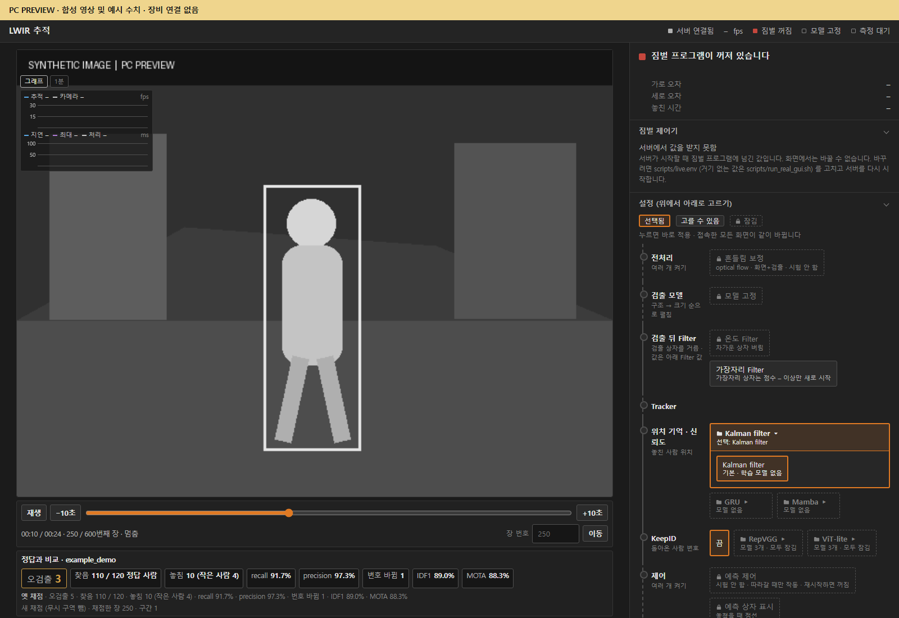

윤오름
팀장PM · 시스템 통합
PC GUI · 통신
짐벌 제어 · 통합 시험
.png)
LWIR OBJECT DETECTION & TRACKING
열화상으로 찾고,
선택한 표적을 따라가다.
팀원윤오름 · 김재남 · 윤관 · 정하건 · 홍정호
멘토천준호 선임연구원
TEAM 05 · OWL
열영상으로 찾고,
선택한 표적을 따라가는 시스템을 만듭니다.
PM · 시스템 통합
PC GUI · 통신
짐벌 제어 · 통합 시험

Runtime 개발
실시간 처리 파이프라인
모델 · 트래커 관리

AI 검출 모델
검출 모델 선정 · 학습
데이터 · 정확도 평가

객체 추적
추적 알고리즘 · 옵션 개선
추적 성능 평가

NPU 최적화
모델 경량화 · 양자화
NPU 배포
PROJECT OBJECTIVE
열화상 속 객체를 찾고,
선택한 표적의 조준점을 화면 중심으로 유지합니다.
카메라 영상에서 객체의
위치와 종류를 인식
PC 화면에서 사용자가
추적할 객체를 지정
같은 표적의 ID를 유지하고
조준점 오차에 따라 짐벌 구동
사용자는 표적을 지정하고, 시스템은 검출·추적 결과를 제어 명령으로 연결합니다.
도식은 운용 개념을 표현SYSTEM REQUIREMENTS
열영상 입력부터 표적 추종·상태 확인까지, 시스템이 충족해야 할 기준입니다.
| 구분 | 요구사항 | 목표 · 확인 기준 |
|---|---|---|
| R1실시간 처리 | 30Hz 입력 영상의 한 프레임 처리를 약 33.3ms 이내에 완료해야 한다. | 프레임 처리시간 ≤ 33.3ms |
| R2객체 검출 | 지정된 거리 범위 안에서 대상 객체를 검출할 수 있어야 한다. | 최소 · 최대 거리 [기준 확정 필요] m |
| R3객체 추적 | 검출된 동일 객체의 ID를 유지하며 정해진 기준 이상으로 추적을 유지해야 한다. | 최소 유지 시간 · 유지율 [기준 확정 필요] |
| R4짐벌 추종 | 사용자가 추적 명령을 내린 객체를 2축 짐벌 제어로 추종해야 한다. | 선택 표적의 Pan · Tilt 추종 |
| R5PC 운용 | PC GUI에서 영상과 추적 결과, 현재 시스템 상태를 확인할 수 있어야 한다. | 영상 · 표적 · 운용 상태 표시 |
SYSTEM ARCHITECTURE
보드는 검출·추적·구동을, 웹 GUI는 표적 선택과 운용 상태 확인을 담당합니다.
640 × 480
열영상 입력
Python 실시간 서버 · 웹 영상 송신 · 운용 상태 관리
USB Serial
방향 · 속도 · 정지
PC · 휴대폰 브라우저
HTTP 8090 접속
영상 · 표적 선택
짐벌 조작 · 상태 확인
설정 · 재생 · 측정
TARGET SELECTION & GIMBAL CONTROL
선택 표적의 조준점 오차를 PD 제어로 보정하고, 수동 개입과 입력 상실에는 정지합니다.
선택한 ID와 최신 관측을 확인하고
조준점과 화면 중심의 오차를 계산
방향과 공통 SPD 계산
Deadband · 속도 상한 · 변화율 제한
웹 명령과 자동 추종을 한 경로로 연결
키 해제 · Space 정지 · 상실 시 정지
REAL-TIME PIPELINE & WEB STREAM
검출·추적 결과를 제어와 화면으로 나누고, 웹 영상의 최신성을 관리합니다.
원본 열영상
프레임 입력
NPU 추론
검출 결과
객체 ID · 위치
결과 발행
JPEG · HTTP 스트림
최신 관측 → 제어기
브라우저는 박스가 그려진 영상을 수신합니다.
검출·추적 처리 후 화면을 발행합니다.
최신 영상 위에 나중에 도착한 박스를 표시합니다.
영상 최신성 ↔ 박스 도착 지연의 절충입니다.
WEB GUI & OPERATION
브라우저에서 표적 선택·짐벌 조작·설정·상태 확인을 통합했습니다.

객체를 클릭해 추종 시작
선택 ID · 오차 · 놓친 상태 확인
방향키 · WASD · 터치 조이스틱
Space 정지 · 키 해제 처리
검출 모델 · 추적기 · 필터 선택
현재 적용값과 변경 상태 확인
녹화 재생 · 프레임 이동 · 정답 비교
측정 시작·종료 · 결과 이력
VERIFICATION & PERFORMANCE
기존 기능 검증과 제어 튜닝 기록을 바탕으로, 최종 운용 조건의 성능을 확인합니다.
| 구분 | 확보한 근거와 확인 범위 |
|---|---|
| 기존 PC 앱 | 영상 · 명령 · 상태 · CSV 시험 기록기존 Qt 경로의 검증 / 새 웹 GUI 시험 결과와 구분 |
| 웹·제어 연동 | HTTP → Python → C++ 브리지 경로 확인코드 분석 · 관련 시험 코드 존재 / 이번 작업에서 재실행하지 않음 |
| PD 제어 튜닝 | 실제 카메라·짐벌 + 가상 표적 시험 기록11월 10일: AUTO 상한 10 · α=0.3 / 현 공개 설정과 다름 |
| 확장·최종 설정 | v27 옵션 시험 기록과 실제 활성값 대조 필요가상 단말·시뮬레이션·실기 조건을 구분해 최종 자료 선별 |
서버 처리 · 영상 준비 · 브라우저 표시와 실제 짐벌 응답은 서로 다른 측정 구간입니다.